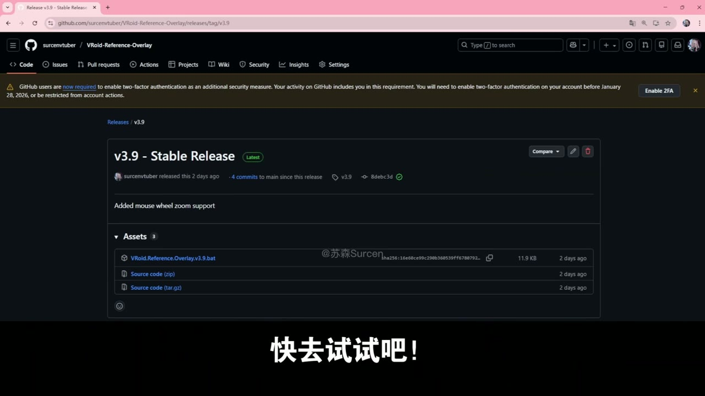
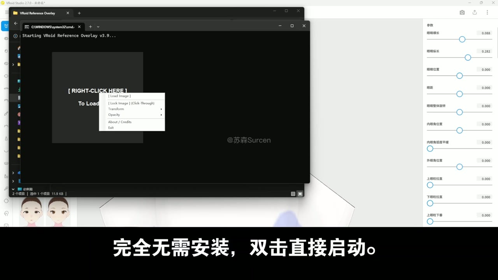
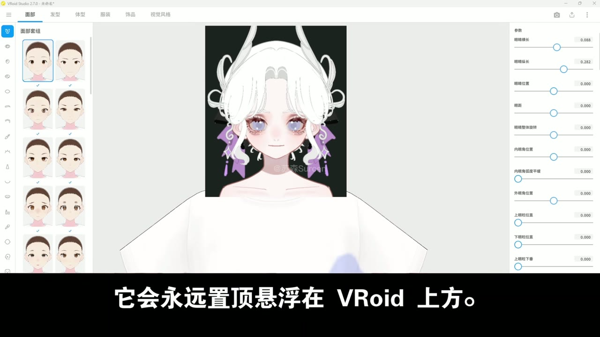
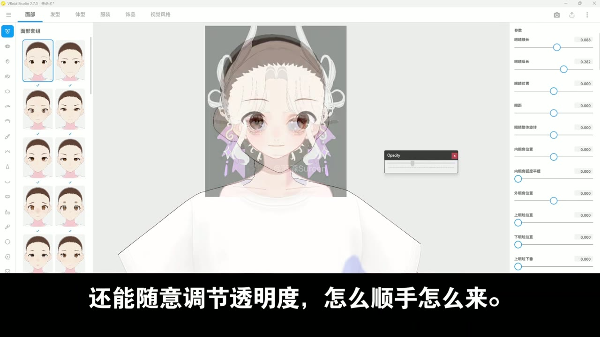
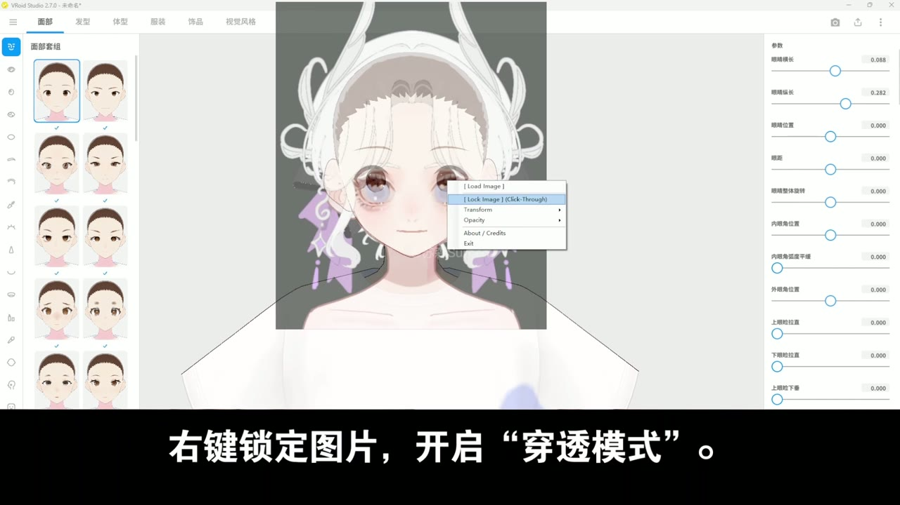
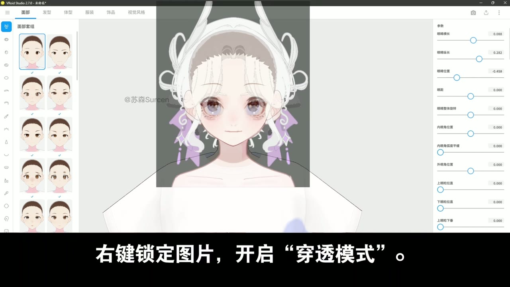
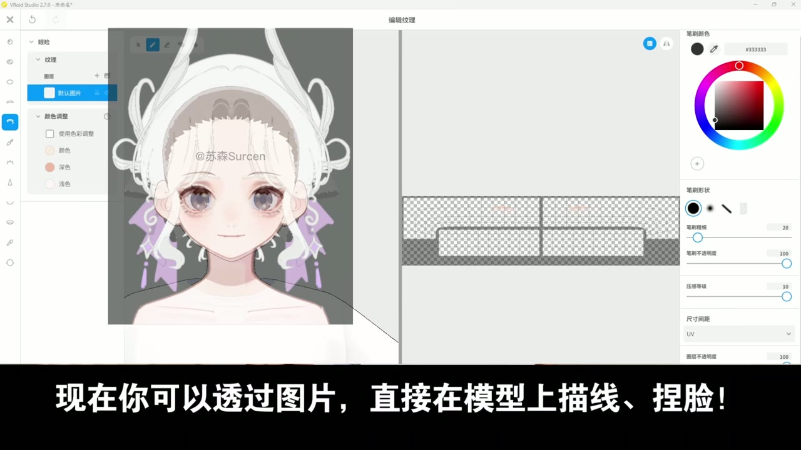
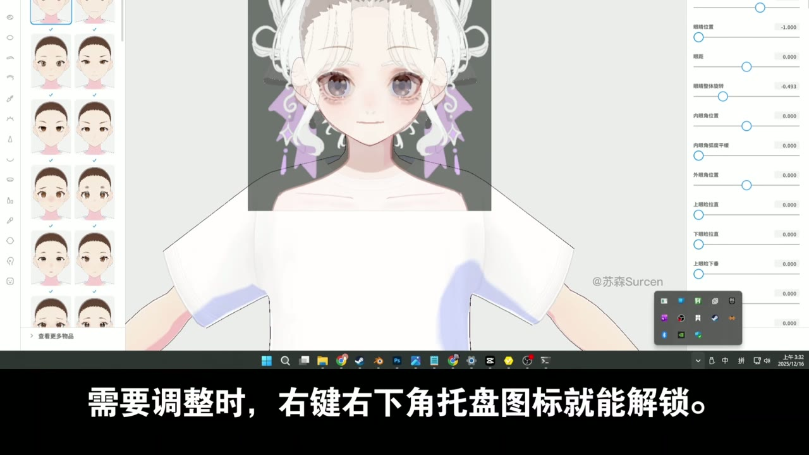

脸型
免安装穿透描图：把参考图叠在脸上
下这个 bat，不用安装

工具窗口标题是 VRoid Reference Overlay。视频里仓库首页的 README 把中文名写成「VRoid 参考图悬浮工具」，并写明只有一个文件、双击就能运行；若 Windows 弹出安全警告，点「仍要运行」。字幕说下载链接在评论区或简介。简介里的仓库地址是 https://github.com/surcenvtuber/VRoid-Reference-Overlay ，另外还有百度网盘 https://pan.baidu.com/s/1w7nK9NccE3bblASN3Kbn-Q?pwd=9999 。网盘只出现在简介，画面上没有。
双击后在深色方块上右键

字幕说完全不用安装，双击直接启动。演示时这个窗口已经浮在 VRoid Studio 2.7.0 上面。加载参考图点第一项 [ Load Image ]。Transform 和 Opacity 右边有下级箭头，这一镜没有点开。画面上没有快捷键。
把图放大，置顶盖在脸上

字幕开头说新版 VRoid 不能导入参考图，所以用这块悬浮窗代替。字幕写右键加载、滚轮缩放。发布页那行鼠标滚轮缩放，和 README 里的「滚动鼠标滚轮，或拖拽图片右下角」是同一件事。画面上能看到图从小方块放大到盖住整张脸，但没有单独停在滚轮或拖角的动作上。先不要锁定，图还要能接住右键。盖好后窗口一直压在模型上面，切到「面部」也不会被 VRoid 挡住。
用 Opacity 把图调透

在图上右键，点 Opacity。拖这条滑杆改变浓淡。视频里拖完后参考图变淡，模型的五官从底下露出来，用来对眼睛和脸的位置。滑杆没有百分比，也没有快捷键。不用时点小窗右上角的叉关掉。视频没有标往左还是往右才更透，对着脸看浓淡即可。
锁定穿透，再拖脸上的参数


点亮 [ Lock Image ] (Click-Through) 之后，点击会穿过图片落到 VRoid 上。画面上的 README 写的是：锁定后，鼠标可以直接穿透图片，操作背后的模型。视频里人停在「面部」，右侧参数还能拖。结果画面上「眼睛位置」是负数，同一屏里「眼睛整体旋转」仍是 0。这只说明滑杆点得到，不要把画面上的数字当成目标。对着参考图的眼睛，自己决定往哪边拖。位置先对好再锁，因为锁定后右键点不到这张图。菜单里的 Transform 有下级箭头，视频没点开；README 还写了旋转和翻转，画面上没有单独演示。
穿透后去编辑纹理，对着模型描

字幕说现在可以透过图片，直接在模型上描线、捏脸。锁定没有解除，参考图还在左边的预览上。描的时候看参考图的眼线和刘海，在左边模型上落笔；右边的色环和笔刷粗细都能点。视频没有停在某一笔的前后对比上，所以不写该描哪一根线，也不写笔刷该停在多少。
要再挪图，右键托盘图标解锁

锁定之后，图上的右键菜单点不到。字幕说的解锁办法是右键屏幕右下角托盘里的这个工具图标。这一镜只张开了托盘，没有看清菜单上的英文，所以不写菜单项名字。解开之后才能再改大小、透明度，或重新点 [ Load Image ]。